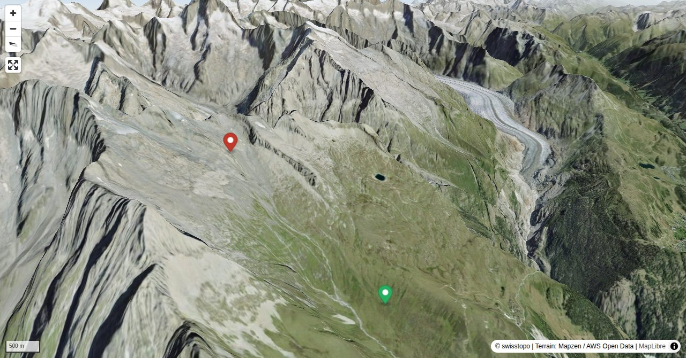

Since 2006, the summer path no longer leads over the Oberaletsch Glacier, but along a newly created panorama path along the western slope of the Fusshorns.
Bernhard Senn is a physiotherapist specializing in workplace ergonomics and workplace health promotion. Bernhard has been an SAC author since 2013 and will often be found 'out and about' in the mountains; whether with rock gear, skis, mountain bike or paraglider.
Quick Facts
| Summit elevation | 2688 m |
|---|---|
| Difficulty | SAC T3 Demanding mountain hiking with possible exposure and a real need for sure-footedness. Guide |
| Trailhead | Belalp |
| Distance | 10.1 km (out-and-back) |
| Total ascent | ~842 m |
| Elevation range | 1970-2687 m |
| Route sources | SAC Route Portal |
Photos


Route Map & Elevation
↓ Download GPX
i
Map tiles: © swisstopo
(CC BY 3.0) | © OpenStreetMap contributors |
Map library: Leaflet.
Route line is approximate — verify against the SAC Route Portal before going.
10.1 km total
↑ 842 m ascent
↓ 302 m descent
max 2687 m
steepest 43%
i
Trail difficulty per segment: OSM
Elevations computed from the inlined GPX track (SwissTopo height API).
sac_scale (precise T1–T6) with
swissTLM3D Wanderwegart
fallback where OSM is silent (coarser T2/T3 and T4+ buckets).
Coverage: OSM 81.3% · swisstopo 18.6% · unknown 0.0%.Elevations computed from the inlined GPX track (SwissTopo height API).
Loading forecast…
3D Terrain View

Route Details
From Belalp
- TODO: Step 1 description.
- TODO: Step 2 description.
Terrain & safety
I few exposed sections crossing the gullies between Z'Leng Fäsch und Jegi.
Source: SAC Route Portal
Getting There & Back
Start: Belalp (2095 m)
Directions from to Belalp
Route returns to Belalp.
Field Reference
| Trailhead | Belalp | 46.37170, 7.97430 |
|---|---|---|
| Summit | Oberaletschhütte SAC (2688 m) | 46.42492, 7.97379 |
Coordinates are WGS84 decimal degrees (lat, lon). Emergency: 112 (general) or 1414 (Rega air rescue). Page URL: